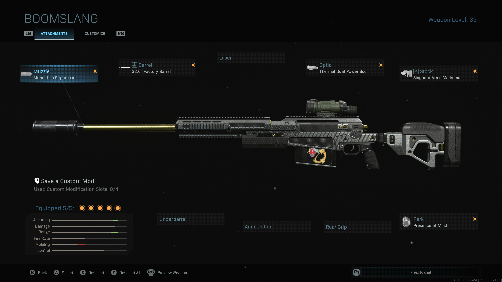
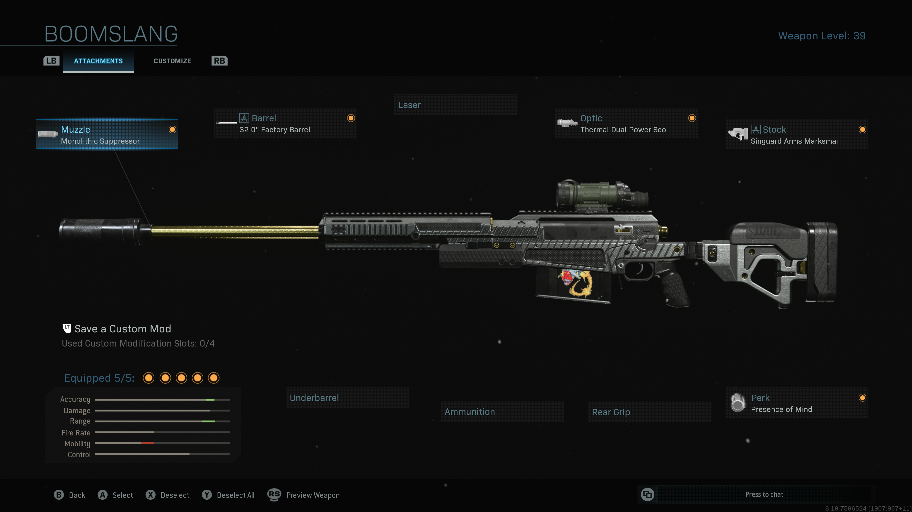

| Comunication | Primary‑weapon | Secondary‑weapon | Leathals | Non‑leathals |
|---|---|---|---|---|
| You will have to utilize call outs. Like when you down or break armor. Also if you see enemies. |
Your primary should be a fast firing weapon. I recomend the M4A1 or the MP7. |
Your secondary should be a suport weapon. I prefer a snipper, this allows me to provide cover support. It also alows me to take down players at a good distance. |
I prefer either the molitof or frag. I dont recomend bouncing bettys or claymores. you shouldent be standing that still. plus you can pick them up when needed. |
Non leathals, the heartbeat sensor will save your life. If some one is using ghost it wont show but overall, for me it is a must have. |
This is my prefered loadout looks like
This is so you can see what atachments I have.
 
